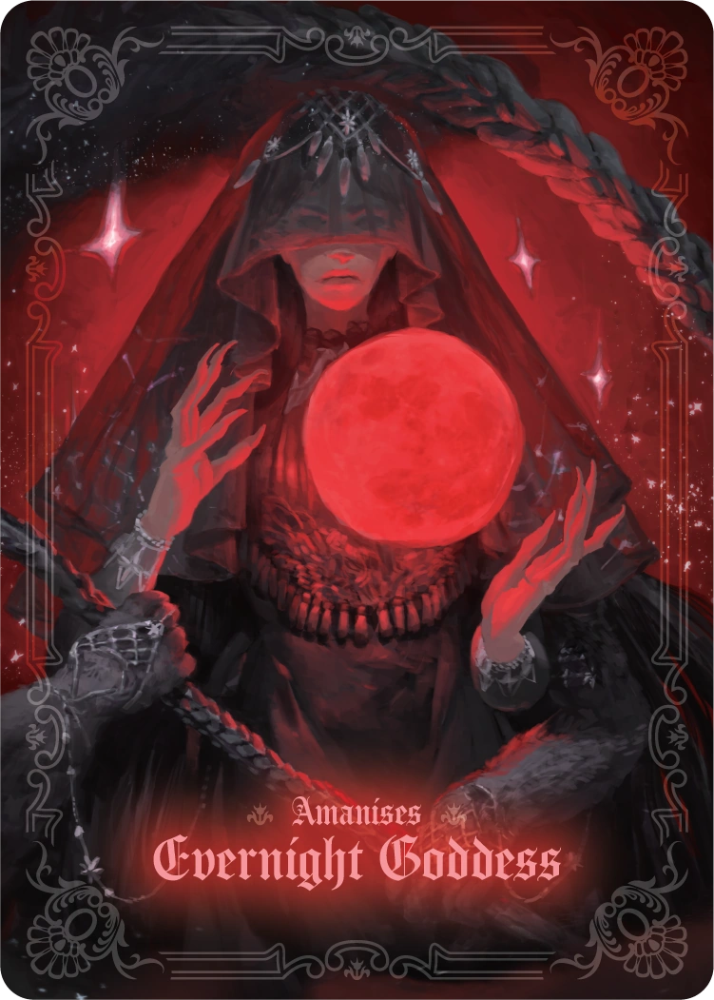

Overview
The era that was buried in the past is a memory shared between us, and also the critical period in which our humanity was born, sprouted, and nourished. Even if I’ve had a long life, it remains my fondest memories.
Evernight Goddess, Book 1, chapter 1370
The Evernight Goddess is the Goddess of the Church of the Evernight Goddess.
Although it is widely believed that as the Lady of Crimson, the Evernight Goddess' symbol is The Moon, Mr. Door has said that the Tarot Card that better represents "Her" is The Star.5
"She" was the first god Klein became familiar with by joining the Nighthawks.
Honorific Name
After The Apocalypse
Eternal Darkness; Singularity of All; Space-Time-in-One (永恒之暗， 万物奇点， 时空归一者)
After World War
The Evernight Goddess stands higher than the cosmos and more eternal than eternity; The Mother of Concealment; The Empress of Misfortune and Horror; Mistress of Repose and Silence (比星空更崇高 比永恒更久远的黑夜女神， 隐秘之母， 厄难与恐惧的女皇， 安眠和寂静的领主)
Note: After the 1350 World War, "Lady of Crimson" was removed from "Her" title, since "She" gave up the authority of the moon.2Book 1, chapter 1277
Before World War
The Evernight Goddess stands higher than the cosmos and more eternal than eternity; The Lady of Crimson; The Mother of Concealment; The Empress of Misfortune and Horror; Mistress of Repose and Silence (比星空更崇高 比永恒更久远的黑夜女神， 绯红之主， 隐秘之母， 厄难与恐惧的女皇， 安眠和寂静的领主)
Sacred Emblem
Sacred Emblems are the symbols of the Gods which are worshipped and glorified by the people in the Fifth Epoch.
The symbol of the Evernight Goddess is the Dark Sacred Emblem. Its base was black, with a crimson half-moon surrounded by radiant light points.
After the World War, "Her" symbol changed from the crimson moon to that of stars.2
Appearance
As an orthodox god, "She" doesn't have an actual figure for people to worship. However, "Her" appearance is shown in the ruins of the Fourth Epoch.
In Fourth Epoch: The Evernight Goddess is an extremely beautiful lady with a hazy face. "She" wears a layered black classical dress that isn't overly complex. A circle of radiating rays is at the bottom of "Her" head.
On this lady’s dress, there are sparkling specks of radiance. They are pieces of bright and resplendent gems. At first glance, it feels as though you are seeing the night and the stars. There is a circular shape under the Evernight Goddess’ head that resembles a full moon.7
1350 World War: "She" wears a layered black dress with countless sparkling specks of radiance like the stars. "Her" ribs and waist each stretch out two arms. Among the six hands, two of them hold a black scythe, two of them hold a crimson "moon", one is empty, and one holds a golden bird-shaped accessory (that was taken from Azik).8
Twisted Version (True Creator's Temple, in the Forsaken Land of the Gods): A woman wearing a black, classical dress. "Her" clothes were layered but not complicated, and it was embedded with a starry sheen. "Her" body was relatively ethereal, with signs of rippling outward. "Her" face was blurry, as though "She" was wearing a mask without any facial features.
The darkness around "Her" surged as one strange eye after another faintly became discernible.
Translations
| Language | Name |
|---|---|
| English | Evernight Goddess Goddess of Misfortune Amanises |
| Chinese | 黑夜女神 厄运女神 阿曼妮西斯 |
| Thai | เทพีรัตติกาล เทพีแห่งเคราะห์ร้าย อามานีซิส |
References
- Author's WeChat post hn, part 30.
- Book 1, chapter 1277.
- Book 2, chapter 1159.
- Book 1, chapter 556.
- Book 1, chapter 440.
- Book 1, chapter 18.
- Book 1, chapter 261.
- Book 1, chapter 1265.
Source
Article adapted from the Evernight Goddess article on the Lord of the Mysteries Fandom wiki (CC BY-SA). Chapter numbers follow that article's citation format.
Image gallery
